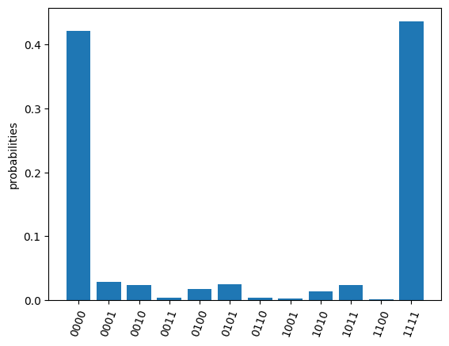
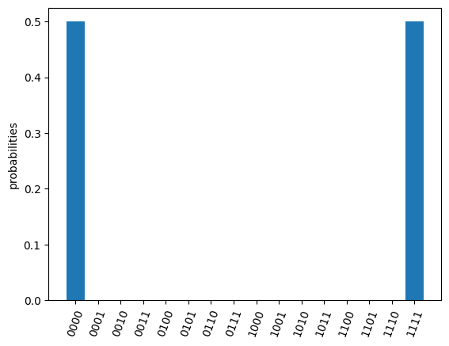

User Guide
Installation
Run the following codes in the command line
pip install pyquafu
Set up your Quafu account
To use the toolkit pyquafu, firstly you need to register on the Quafu website and get your apitoken <your API token>. If you already have an account, execute the following code to set up your account.
from quafu import User
user = User()
user.save_apitoken("<your API token>")
You only need to save your token once and no longer need to execute above code when you use quafu after, except if you want to change your account.
Build your first quantum circuit
Initialize a circuit with 5 qubits
import numpy as np
from quafu import QuantumCircuit
q = QuantumCircuit(5)
Add quantum gates. For quantum gates Quafu supports, please check the API reference for QuantumCircuit
q.x(0)
q.x(1)
q.cnot(2, 1)
q.ry(1, np.pi/2)
q.rx(2, np.pi)
q.rz(3, 0.1)
q.cz(2, 3)
<quafu.circuits.quantum_circuit.QuantumCircuit at 0x7f90e0505280>
Add measurement information including qubits measured (measures) and the classical bits keeping the measured results (cbits). If there is no measurement information provided, all qubits are measured by default.
measures = [0, 1, 2, 3]
cbits = [0, 1, 2, 3]
q.measure(measures, cbits=cbits)
You can draw the circuit using the draw_circuit method and use width parameter to adjust the length of the circuit.
q.draw_circuit(width=4)
q[0] ------X----------------------------- M->c[0]
q[1] ------X--------+----RY(1.571)------- M->c[1]
|
q[2] ---------------*----RX(3.142)----*-- M->c[2]
|
q[3] --RZ(0.100)----------------------Z-- M->c[3]
You can also initialize your quantum circuit with openqasm text. QuantumCircuit class provides the from_openqasm method for initializing quantum circuits directly from openqasm.
qc = QuantumCircuit(4)
test_ghz = """OPENQASM 2.0;
include "qelib1.inc";
qreg q[4];
h q[0];
cx q[0],q[1];
cx q[0],q[2];
cx q[0],q[3];
"""
qc.from_openqasm(test_ghz)
qc.draw_circuit()
q[0] --H----*----*----*-- M->c[0]
| | |
q[1] -------+----|----|-- M->c[1]
| |
q[2] ------------+----|-- M->c[2]
|
q[3] -----------------+-- M->c[3]
Submit your circuit
Now you are ready to submit the circuit to the experimental backend. First, initialize a Task object
from quafu import Task
task = Task()
You can configure your task properties using the config method. Here we choose the backend (backend) as ScQ-P18, the single shots number (shots) as 2000 and compile the circuit on the backend (compile).
task.config(backend="ScQ-P18", shots=2000, compile=True)
If you set the compile parameter to False, make sure that you know the topology of the backend well and submit a valid circuit.
Send the quantum circuit to the backend. Here we send circuit q.
res = task.send(q)
You can use the returned results to check the count and probability of each measured bit string. The output bits are arranged in big-endian convention by default.
print(res.counts) #counts
print(res.probabilities) #probabilities
res.plot_probabilities()
OrderedDict([('0010', 3), ('0110', 15), ('1001', 12), ('1010', 1015), ('1011', 13), ('1110', 932), ('1111', 10)])
{'0010': 0.0015, '0110': 0.0075, '1001': 0.006, '1010': 0.5075, '1011': 0.0065, '1110': 0.466, '1111': 0.005}

If you want to check the correctness of the executed results. Quafu provide simple circuit similator
from quafu import simulate
simu_res = simulate(q, output="probabilities")
simu_res.plot_probabilities(full=True)

You can also submit the 4-bit GHZ circuit qc built from openqasm.
res = task.send(qc)
res.plot_probabilities()
simu_res = simulate(qc)
simu_res.plot_probabilities(full=True)


If you don't want to plot the results for basis with zero probabilities, set the parameter full in method plot_probabilities to False. Note that this parameter is only valid for results returned by the simulator.
Submit circuit and measure observables
Quafu provides measuring observables with an executed quantum circuit. You can input Pauli operators that need to measure expectation values to the submit method.
For example, you can input [["XYX", [0, 1, 2]], ["Z", [1]]] to calculate the expectation of operators and .
The submit method will minimize the executing times of the circuit with different measurement basis that can calculate all expectations of input operators.
Here we show how to measure the energy expectation of the Ising chain First, we initialize a circuit with three Hadamard gate
q = QuantumCircuit(5)
for i in range(5):
if i % 2 == 0:
q.h(i)
q.draw_circuit()
measures = list(range(5))
q.measure(measures)
q[0] --H-- M->c[0]
q[1] ----- M->c[1]
q[2] --H-- M->c[2]
q[3] ----- M->c[3]
q[4] --H-- M->c[4]
Next, we set operators that need to be measured to calculate the energy expectation, and submit the circuit using submit method
test_Ising = [["X", [i]] for i in range(5)]
test_Ising.extend([["ZZ", [i, i+1]] for i in range(4)])
res, obsexp = task.submit(q, test_Ising)
Job start, need measured in [['XXXXX', [0, 1, 2, 3, 4]], ['ZZZZZ', [0, 1, 2, 3, 4]]]
The function return measurement results and operator expectations. The measurement results only contain two ExecResult objects since the circuit is only executed twice, with measurement basis [['XXXXX', [0, 1, 2, 3, 4]] and ['ZZZZZ', [0, 1, 2, 3, 4]]] respectively.
res[0].plot_probabilities()
res[1].plot_probabilities()


The return operator expectations (obsexp) is a list with a length equal to the input operator number. We can use it to calculate the energy expectation
print(obsexp)
g = 0.5
E = g*sum(obsexp[:5])+sum(obsexp[5:])
print(E)
[1.0, 0.046999999999999986, 1.0, 0.03699999999999998, 0.998, 0.00899999999999995, 0.08499999999999996, 0.08299999999999996, 0.008999999999999952]
1.7269999999999999
Submit task asynchronously
In the above examples, you have to wait for the result to return and cannot do other jobs continually. Now you can choose to set the parameter wait in send function to false to submit the task asynchronously. When you need, you can retrieve the results at any time and check the status using the retrieve function. Here, we use the example that measuring the qubit decoherence time to show the detailed usage.
First initial a task
task = Task()
task.config(backend="ScQ-P10", shots=2000, compile=False, priority=2)
Prepare parameters of a group of tasks and send the task asynchronously.
ts = range(0, 21, 1)
names = ["%dus" %t for t in ts]
for name, t in zip(names, ts):
q = QuantumCircuit(3)
q.x(2)
q.delay(2, t, unit="us")
q.measure([2])
res = task.send(q, wait=False, name=name, group="Q3_T1")
Here the delay options will idle the target qubit 2 for a duration t in the time unit us(microsecond) and do nothing. In the send function, we set wait to false to execute the task asynchronously, give each task a name by duration time and set all tasks to a group named "Q3_T1".
Now we can try to retrieve the group of tasks using the retrieve_group method.
group_res = task.retrieve_group("Q3_T1")
probs = [res.probabilities["1"] for res in group_res]
Group: Q3_T1
task_id task_name status
1663B8202B410F1E 0us Completed
1663B83000D833A8 1us In Queue
1663B830074079CF 2us In Queue
1663B8300B951E51 3us In Queue
1663B8300FF78259 4us In Queue
1663B83014701227 5us In Queue
1663B830192FB161 6us In Queue
1663B8301DD58707 7us In Queue
1663B8302F0B6560 8us Running
1663B83033790C37 9us Completed
1663B83038996527 10us Completed
1663B84002C09ECE 11us In Queue
1663B840078B2AE8 12us In Queue
1663B84019A9B7A8 13us In Queue
1663B8401E3D0EF1 14us In Queue
1663B84022BFF72E 15us In Queue
1663B840277610E7 16us In Queue
1663B8402BFA740F 17us In Queue
1663B84031D4E5A0 18us In Queue
1663B840364C8B0E 19us In Queue
1663B8403AE76050 20us In Queue
group_res = task.retrieve_group("Q3_T1")
probs = [res.probabilities["1"] for res in group_res]
Group: Q3_T1
task_id task_name status
1663B8202B410F1E 0us Completed
1663B83000D833A8 1us Completed
1663B830074079CF 2us Completed
1663B8300B951E51 3us Completed
1663B8300FF78259 4us Completed
1663B83014701227 5us Completed
1663B830192FB161 6us Completed
1663B8301DD58707 7us Completed
1663B8302F0B6560 8us Completed
1663B83033790C37 9us Completed
1663B83038996527 10us Completed
1663B84002C09ECE 11us Completed
1663B840078B2AE8 12us Completed
1663B84019A9B7A8 13us Completed
1663B8401E3D0EF1 14us Completed
1663B84022BFF72E 15us Completed
1663B840277610E7 16us Completed
1663B8402BFA740F 17us Completed
1663B84031D4E5A0 18us Completed
1663B840364C8B0E 19us Completed
1663B8403AE76050 20us Completed
Once all tasks are completed, we can do the next step to get .
import matplotlib.pyplot as plt
from scipy.optimize import curve_fit
def func(x, a, b):
return a*np.exp(-b*x)
paras, pconv = curve_fit(func, ts, probs)
plt.plot(ts, probs, "o")
plt.plot(ts, func(ts, *paras), "--")
plt.xlabel("$t (\mu s)$")
plt.ylabel("prob")
plt.text(16, 0.9, r"$T_1=%.2f \mu s$" %(1/paras[1]))
Text(16, 0.9, '$T_1=19.69 \\mu s$')

Note that task retrieving relies on the submitting history saved in the task object. If your task object is changed or destroyed in the memory, you may get the wrong results. Suppose you have to close your program after submitting tasks, you need first save the history associated with the `task`` object.
old_history = task.get_history() #get the history of task
#save the history to disk if you need!
#do save...
#retrieve the result using the `history` parameter with any Task() object
#do load...
newtask = Task()
newtask.load_account()
group_res = newtask.retrieve_group("Q3_T1", history=old_history)
Group: Q3_T1
task_id task_name status
1663B8202B410F1E 0us Completed
1663B83000D833A8 1us Completed
1663B830074079CF 2us Completed
1663B8300B951E51 3us Completed
1663B8300FF78259 4us Completed
1663B83014701227 5us Completed
1663B830192FB161 6us Completed
1663B8301DD58707 7us Completed
1663B8302F0B6560 8us Completed
1663B83033790C37 9us Completed
1663B83038996527 10us Completed
1663B84002C09ECE 11us Completed
1663B840078B2AE8 12us Completed
1663B84019A9B7A8 13us Completed
1663B8401E3D0EF1 14us Completed
1663B84022BFF72E 15us Completed
1663B840277610E7 16us Completed
1663B8402BFA740F 17us Completed
1663B84031D4E5A0 18us Completed
1663B840364C8B0E 19us Completed
1663B8403AE76050 20us Completed
Finally, you can also retrieve a single task using its unique task_id.
res_0us = newtask.retrieve(old_history["Q3_T1"][0])
print(res_0us.probabilities)
{'0': 0.014, '1': 0.986}